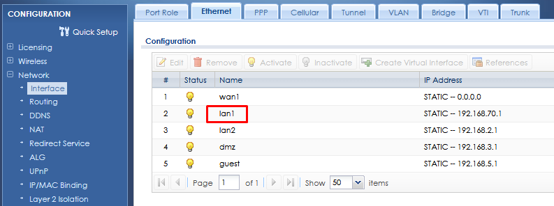
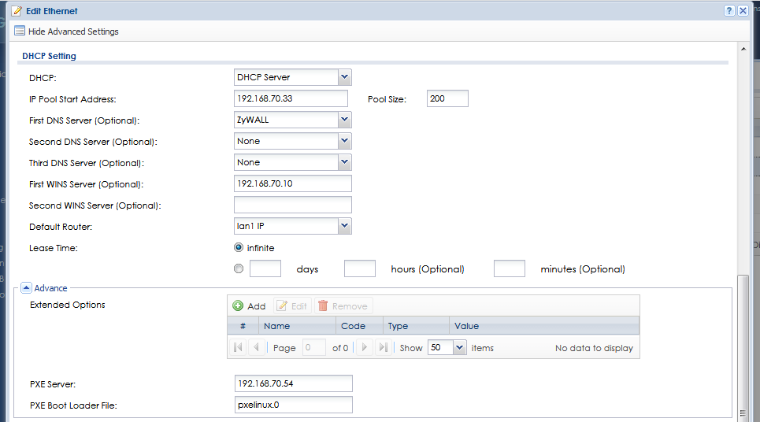
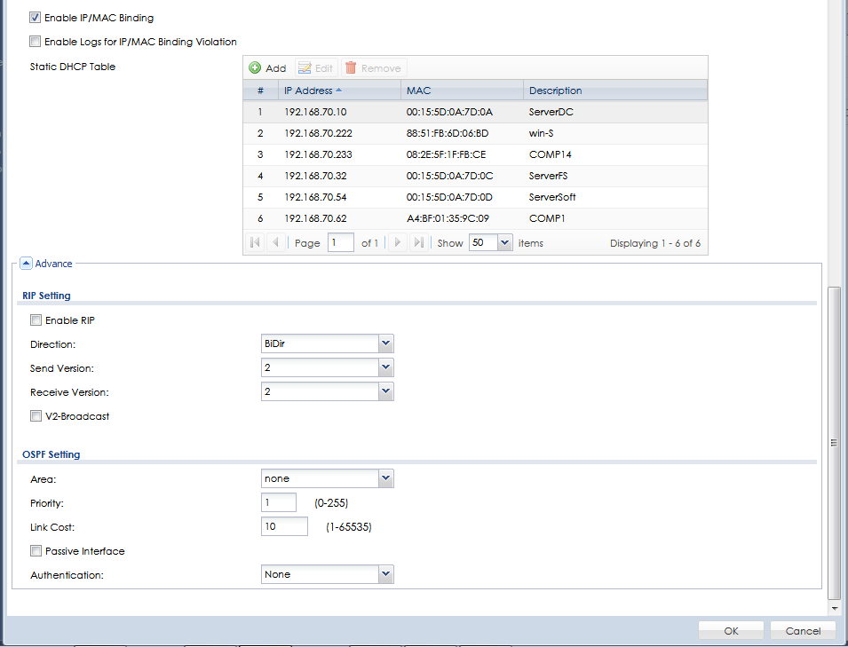

идем в Odject => ISP Account =>WAN_PPPoE_ACCOUNT
Либо там создаем новый профиль (Для лучшего удобства, если роутер перенсут на другое место к другому провайдеру)
Вводим в него логин и пароль.
Далее перехдим в Network => Interface => PPP
для настройки порта WAN
Далее настраиваем порт LAN
Роутер может организовать 2 независимых сети. Настраиваем LAN1.


